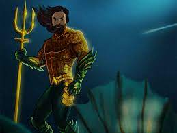

Aquaman
Empresas onde trabalhou
- Atlantis: Aquaman é o governante de Atlantis, uma civilização subaquática avançada.
- Liga da Justiça: Assim como outros heróis, Aquaman é membro da Liga da Justiça, colaborando para enfrentar ameaças globais.
- Guarda Real de Atlantis: Aquaman também lidera a Guarda Real de Atlantis, protegendo seu reino e seu povo.
Qualidades
- Conexão com a Vida Marinha
- Coragem e Determinação
- Liderança e Devoção ao Reino

Voltar para o início